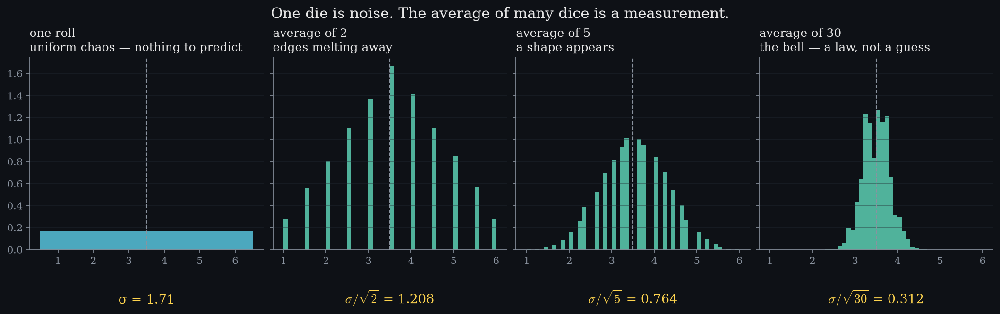

A single measurement tells you almost nothing — its value is chaos. But averages of repeated measurements obey a law so reliable that entire industries are built on it. Watch one die become a bell as we average more of them; then notice the yellow numbers: the spread shrinks by exactly σ/√n. That single fact is the engine under everything else in this curriculum.
σx̄ = σ/√n
(1.1)
The standard error. Average n parts and the spread of that average shrinks by the square root of n.
